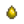

Fabrication
- Pour les aliments préparés dans la cuisine, voir Cuisine.
L'Artisanat consiste en la création de nouveaux objets spécifiques en suivant un plan/recette de fabrication. Similaire à la cuisine, chaque plan/recette liste un certains nombre de ressources qui seront consommées pour la création de l'objet en question. Au commencement du jeu, le joueur connait 8 recettes de base, d'autres plan/recette s'obtiennent en faisant monter ses niveaux de compétences, en se liant d'amitié avec les habitants, ou en les achetant en boutique ou même lors de certains événements spéciaux. Contrairement à la cuisine, la majorité des objets fabriqués ne sont pas mangeables.
Le Menu d'Artisanat est accessible en ouvrant son inventaire (touche ESC ou E sur PC,  sur Switch,
sur Switch,  sur Xbox,
sur Xbox,  sur PlayStation) et en se rendant sur l'onglet avec une icône de marteau. Les objets que le joueur peut fabriquer avec les ressources présentes ET en quantités nécessaires dans son inventaire apparaîtront en couleur, tandis que les recettes où certains ingrédients sont manquants apparaîtrons en gris.
sur PlayStation) et en se rendant sur l'onglet avec une icône de marteau. Les objets que le joueur peut fabriquer avec les ressources présentes ET en quantités nécessaires dans son inventaire apparaîtront en couleur, tandis que les recettes où certains ingrédients sont manquants apparaîtrons en gris.
En mettant le curseur sur un objet, la liste des ingrédients nécessaires à sa fabrication apparaît, ceux inscrit en rouge sont manquant dans l'inventaire du joueur.
Une fois les ingrédients réunis, l'objet se créé en cliquant sur celui-ci dans l'onglet d'artisanat. L'objet nouvellement créé se placera dans l'inventaire du joueur. L'écran réunissant les plan/recettes peuvent se trouver sur plusieurs pages une fois un grand nombre d'objet déverrouillé.
Bombes
Les Bombes sont des objets à usage unique, elles génèrent une explosion endommageant certains objet à l’intérieur du rayon de l'explosion. Il existe plusieurs taille de bombe.
| Image | Nom | Description | Ingrédients | Source de recette | Prix de vente |
|---|---|---|---|---|---|
| Petite bombe | Génère une petite explosion. Restez en retrait ! | ||||
| Bombe | Génère une explosion. Faites attention ! | ||||
| Méga-bombe | Génère une puissante explosion. Utilisez-la avec extrême prudence. |
Clôtures
Les clôtures bloquent le joueur, les animaux d'élevage, et la pousse de l'herbe. La matière utilisée pour construire des clôtures change l'aspect esthétique et la durabilité.
Les clôtures s'abiment au cours du temps. Tout juste placées, elles laisseront tomber l'objet une fois démolies. Sinon, elles ne vont pas laisser tomber un objet et risquent d'être visiblement endommagés. Les clôtures disparaîtront complètement si elles sont laissées dans un état endommagé pendant trop longtemps. Un moyen pour remplacer une clôture endommagée (autre que de la frapper avec un outil et de la remplacer ensuite) consiste à "utiliser" la clôture brisée pendant qu'une nouvelle clôture est équipée en inventaire. Votre conjoint/conjointe peut réparer certaines clôtures brisées tous les jours.
Le Portail peut être utilisé pour passer à travers les clôtures et fermé pour garder le bétail (et d'autres entités qui se déplacent vers le sol)
Les Torches peuvent être placées sur les clôtures.
| Image | Nom | Description | Durabilité | Ingrédients | Source de recette |
|---|---|---|---|---|---|
| Portail | Ce portail permet de franchir une clôture. | 400 jours | À l'arrivée dans la ferme | ||
| Clôture en bois | Garde l’herbe et les animaux confinés ! | 54-58 jours | À l'arrivée dans la ferme | ||
| Clôture de pierre | Dure plus longtemps qu’une clôture en bois. | 118-122 jours | |||
| Clôture de fer (10) | Dure plus longtemps qu’une clôture de pierre. | 248-252 jours | |||
| Clôture en bois dur | Type de clôture le plus résistant. | 558-562 jours |
Arroseurs
Les arroseurs automatiques, arrosent les plants tous les matins à 06:00. Ils ne peuvent pas remplir le bol d'eau de vos chat ou chien. Ils ne peuvent pas non plus arroser les plants plantés dans des pots de jardin.
| Image | Nom | Description | Ingrédients | Source de recette |
|---|---|---|---|---|
| Arroseur | Arrose les 4 carreaux adjacents chaque matin. | |||
| Arroseur de qualité | Arrose les 8 carreaux adjacents chaque matin. | |||
| Arroseur en iridium | Arrose les 24 carreaux adjacents chaque matin. |
Voici la portée de chacun des arroseurs :

En plus de pouvoir être fabriqués, les arroseurs et les arroseurs de qualité peuvent apparaître aléatoirement à la vente au Chariot de voyage. Les arroseurs en iridium peuvent être acheté auprès de Krobus pour  10 000po.
10 000po.
Astuce: Une fois que votre houe a été amélioré, il est facile de casser involontairement la case où se trouve l'arroseur, ce qui l'enlève de la carte et le place dans votre inventaire. Pour éviter cela vous pouvez placez l'arroseur sur une case avec un chemin dessus.
Équipement artisanal
Les machines d'artisanat permettent de produire des produits artisanaux. Chaque machine produit un type d'objet spécifique, et ne peut en fabriquer qu'un seul à la fois. Le seul moyen d'augmenter sa production est de fabriquer plusieurs machines.
Le joueur doit récupérer l'objet de la machine avant de pouvoir l'utiliser de nouveau.
| Image | Nom | Description | Ingrédients | Source de recette |
|---|---|---|---|---|
| Machine à mayonnaise | Transforme les oeufs en mayonnaise. | |||
| Ruche | À mettre dehors pour qu’elle produise du miel délicieux ! (Sauf en hiver). | |||
| Bocal | Transforme les légumes en cornichons et les fruits en confiture. | |||
| Presse à fromage | Transforme le lait en fromage. | |||
| Métier à tisser | Transforme la laine brute en tissu fin. | |||
| Tonneau | Places-y un fruit ou un légume. Cela se transformera en une boisson. | |||
| Machine à huile | Fabrique de l’huile de truffe gastronomique. | |||
| Fût | S’utilise dans la cave pour vieillir des produits comme le vin et le fromage. | Maison de ferme Amélioration cellier | ||
| Fumoir à poisson | Placez un poisson à l'intérieur avec un morceau de charbon pour créer du poisson fumé. Le poisson fumé vaut deux fois plus d'or. | Poissonnerie pour | ||
| Déshydrateur | Placez 5 fruits ou champignons comestibles à l'intérieur pour les faire sécher. | Magasin général de Pierre pour |
Engrais
- Article principal : Engrais
L'Engrais est utilisé pour booster la production de votre ferme. Il peut garder un sol irrigué, augmenter les chances d'avoir des récoltes de meilleure qualité, ou accélérer leur pousse. Certains types d'engrais doivent être utilisés avant de planter une graine, et d'autres peuvent être utilisés après avoir planté une graine. Vous ne pouvez utiliser qu'un seul type d'engrais pour une unique parcelle labourée, mais il peut être changé après la récolte.
Note: Toute fabrication d'Engrais de croissance rapide (I et II) produit 5 Engrais. Chaque fabrication de Sol de rétention de qualité produit 2 Engrais. Les autres fabrications produisent 1 Engrais.
| Image | Nom | Description | Ingrédients | Source de recette |
|---|---|---|---|---|
| Engrais de base | Améliore un peu la qualité du sol, augmentant vos chances de produire des récoltes de qualité. À mélanger dans un sol labouré. |  Sève (2) | ||
| Engrais de qualité (2) | Améliore la qualité du sol, augmentant vos chances de produire des récoltes de qualité. À mélanger dans un sol labouré. | Sève (4) |
||
| Engrais de luxe (5) | Améliore considérablement la qualité du sol, augmentant vos chances de cultiver des récoltes de qualité. À ajouter à un sol labouré. | Acheté à la chambre de Qi pour | ||
| Engrais de croissance rapide (5) | Stimule la production de feuilles. Taux de croissance garanti d'au moins 10 %. À mélanger dans le sol labouré. | |||
| Engrais de croissance rapide II (5) | Stimule la production de feuilles. Taux de croissance garanti d'au moins 25 %. À mélanger dans le sol labouré. | |||
| Vitesse grand V | Augmente grandement la production de feuilles. Cela garantira d’augmenter le taux de croissance d’au moins 33%. À ajouter à un sol labouré. | Acheté à la chambre de Qi pour | ||
| Sol de rétention basique | Ce sol a une chance de rester irrigué pendant la nuit. À mélanger dans un sol labouré. | |||
| Sol de rétention de qualité (2) | Ce sol a beaucoup plus de chance de rester irrigué pendant la nuit. À mélanger dans un sol labouré. | |||
| Rétention d'eau de luxe | Ce sol a 100% de chances de retenir l'eau pendant la nuit. À ajouter à un sol labouré. | Acheté au Commerçant insulaire pour | ||
| Engrais pour arbres | À répartir sur un arbre sauvage pour assurer une croissance rapide, même en hiver. Ne fonctionne pas sur les arbres fruitiers. |
Graines
Les graines sauvages saisonnières fabriquées feront pousser des fruits/légumes/fleurs qui se ramassent lors de la cueillette de cette même saison. Les Graines anciennes fabriquées feront pousser un Fruit ancien.
Note: Faire pousser des graines sauvages saisonnières peuvent souvent détruire la parcelle labourée (et l'Engrais), laissant un sol non-labouré à la place après la récolte.
| Image | Nom | Description | Ingrédients | Source de recette |
|---|---|---|---|---|
| Graines sauvages (Print.) (Graines de printemps) |
Un assortiment de graines sauvages de printemps.
(Note: L'objet fabriqué est appelé "Graines de printemps". La recette produit 10 graines par fabrication.) |
|||
| Graines sauvages (Été) (Graines d'été) |
Un assortiment de graines sauvages d'été.
(Note: L'objet fabriqué est appelé "Graines d'été". La recette produit 10 graines par fabrication.) |
|||
| Graines sauvages (Aut.) (Graines d'automne) |
Un assortiment de graines sauvages d'automne.
(Note: L'objet fabriqué est appelé "Graines d'automne". La recette produit 10 graines par fabrication.) |
|||
| Graines sauvages (Hiv.) (Graines d'hiver) |
Un assortiment de graines sauvages d’hiver.
(Note: L'objet fabriqué est appelé "Graines d'hiver". La recette produit 10 graines par fabrication.) |
|||
| Graines anciennes | Pourraient-elles encore pousser ? | En donnant 1 Graine ancienne au musée | ||
| Gazon (graine) | Placez-le dans votre ferme pour faire pousser une parcelle d'herbe. | Achetée chez Pierre pour | ||
| Terreau d'herbe bleue | Mettez ça dans votre ferme pour planter une touffe d'herbe bleue. | Chambre des noix de Monsieur Qi pour | ||
| Jeune théier | Il faut 20 jours pour que le théier arrive à maturité. Il produit des feuilles de thé pendant la dernière semaine de chaque saison, sauf en hiver. Aucun arrosage n’est nécessaire ! | Graines sauvages (n'importe) (2) |
Courrier le lendemain de l'événement 2 coeurs de Caroline | |
| Graines de fibre (4) | À planter durant toute l’année. Ne nécessite pas d’arrosage. À récolter avec une faux. Attendre 7 jours avant de les récolter. | |||
| Graine d'arbre mystique | Cette graine peut être plantée pour faire pousser un arbre spécial. |
Décoration
| Image | Nom | Description | Ingrédients | Source de recette |
|---|---|---|---|---|
| Parquet | À placer au sol pour créer des chemins ou pour embellir vos sols. | Scierie pour | ||
| Sol de planches rustique | À mettre par terre pour créer des chemins ou pour décorer vos sols. | Scierie pour | ||
| Sol de paille | À placer au sol pour créer des chemins de paille ou pour embellir vos sols. | Scierie pour | ||
| Sol patiné | À placer au sol pour créer des chemins ou pour embellir vos sols. |
| ||
| Plancher de cristal | À placer au sol pour créer des chemins de cristal ou pour embellir vos sols. |
| ||
| Sol en pierre | À placer au sol pour créer des chemins pavés ou pour embellir vos sols. | Scierie pour | ||
| Sol de promenade en pierre | À mettre par terre pour créer des chemins ou pour décorer vos sols. | Scierie pour | ||
| Sol en brique (5) | À placer au sol pour créer des chemins ou pour embellir vos sols. | Scierie pour | ||
| Chemin en bois | À placer au sol pour créer des chemins en bois ou pour embellir vos sols. | À l'arrivée dans la ferme | ||
| Chemin en pierre | À placer au sol pour créer des chemins pavés ou pour embellir vos sols. | À l'arrivée dans la ferme | ||
| Chemin pavé | À placer au sol pour créer des chemins pavés ou pour embellir vos sols. | À l'arrivée dans la ferme | ||
| Chemin de pierres naturelles | À placer au sol pour créer des chemins pavés ou pour embellir vos sols. | Scierie pour | ||
| Chemin de cristal | À placer au sol pour créer des chemins en cristal ou pour embellir vos sols. | Scierie pour |
Pêche
- Articles principaux : Matériel de pêche, Appât
| Image | Nom | Description | Ingrédients | Source de recette |
|---|---|---|---|---|
| Leurre | Sa forme le fait tourner dans l'eau. Augmente légèrement le taux de touche quand on pêche. | |||
| Piège flotteur | Le poisson s'échappe plus lentement quand vous ne les ramenez pas. | |||
| Flotteur à sonar | Montre quel est le poisson qui se trouve sur la ligne avant qu'il ne soit attrapé. | |||
| Flotteur en liège | Augmente légèrement la taille de votre "jauge de pêche". | |||
| Flotteur de qualité | Augmente la qualité du poisson que vous capturez. | |||
| Chasseur de trésor | Les poissons ne s’échappent pas lorsque vous collectez des trésors. Augmente aussi légèrement les chances de trouver des trésors. | |||
| Hameçon à leurre | Sa languette en métal et ses serpentins colorés créent un spectacle attrayant pour les poissons. Augmente le nombre de prises lors de la pêche. | |||
| Ardillon | Assure votre prise permettant que la "jauge de pêche" reste accrochée à votre prise. Fonctionne mieux sur les poissons lents et faibles. | |||
| Aimant (3) | Augmente les chances de trouver des trésors lors de la pêche. Cependant, les poissons ne raffolent pas du goût. | |||
| Appât (5) | Pousse les poissons à mordre plus rapidement. Doit d'abord être attaché à une canne à pêche. | |||
| Appât de luxe (5) | Fait mordre les poissons encore plus vite et augmente la taille de la "barre de pêche". | |||
| Appât sauvage (5) | Une recette unique de Linus qui vous permettra d’attraper deux poissons à la fois. | |||
| Appât magique (5) | Vous permet d'attraper des poissons durant n'importe quelle saison, par tous les temps, à n'importe quelle heure et quel que soit le type d'eau dans lequel vous jetez votre appât. | Acheté à la chambre de Qi pour | ||
| Appât de défi (5) | Une prise "parfaite" rapporte le triple de poissons. Cependant, chaque fois qu'un poisson s'échappe de la "barre de pêche", la prise est réduite. | |||
| Casier à crabes | Placez-le dans l’eau, remplissez-le d’appâts et vérifiez le lendemain si vous avez attrapé quelque chose. Fonctionne dans les cours d’eau, les lacs et la mer. | Avec la profession Trappeur: |
Anneaux
- Article principal : Anneaux
| Image | Nom | Description | Ingrédients | Source de recette |
|---|---|---|---|---|
| Anneau solide | Réduis de moitié la durée des effets négatifs. | |||
| Anneau du guerrier | Insuffle occasionnellement au porteur de "l’énergie guerrière" après avoir tué un monstre. | |||
| Anneau de Yoba | Protège occasionnellement le porteur contre les dégâts. | |||
| Anneau épineux | Lorsque les ennemis vous blessent, ils subissent eux-mêmes des dégâts. | |||
| Anneau de pierre luisante | Émets une lumière constante et augmente également votre distance pour collecter des objets. | |||
| Anneau d'iridium | Scintille, attire les objets et augmente les dégâts d'attaque de 10 %. | |||
| Bague de mariage | Une vieille tradition de Zuzu Ville... C’est pour demander la main d’une autre personne en mariage. Note: Cette recette n'est disponible qu'en Multijoueur. |
Chariot de voyage pour |
Comestibles
| Image | Nom | Description | Ingrédients | Énergie | Santé | Source de recette |
|---|---|---|---|---|---|---|
| Casse-croûte | Une collation rapide pour nourrir les travailleurs affamés. | |||||
| Steak d'insecte | Le dernier recours d'un spéléoplongeur affamé. | |||||
| Élixir de vie | Restaure la santé à son maximum. | |||||
| Huile d'ail | Buvez ceci et les monstres les plus faibles vous éviteront. |
Consommables
Ces objets ne peuvent être utilisés qu'une seule fois, ils sont consommés après utilisation.
| Image | Nom | Description | Ingrédients | Source de recette |
|---|---|---|---|---|
| Senteur de monstre | Vaporisez ça sur vous pour attirer plus de monstres hors de leur cachette. | |||
| Poussière de fée | Saupoudrez sur les barils, les fours et tout autre équipement de raffinage pour récolter instantanément leur produit. | Quête "La femme du pirate" | ||
| Totem de téléportation : Mer | Vous téléporte directement à la mer. Disparaît après son utilisation. | |||
| Totem de téléportation : Montagnes | Vous téléporte directement à la montagne. Disparaît après son utilisation. | |||
| Totem de téléportation : Ferme | Vous téléporte directement à la maison. Disparaît après son utilisation. | |||
| Totem de téléportation : Desert | Téléporte directement vers le désert de Calico. Disparait après son utilisation. | Le Marchand du Désert vend la recette en échange de | ||
| Totem de téléportation: Île | Vous téléporte directement sur l'Île Gingembre. Peut être utilisé qu'une seule fois. | Magasin du Nain du Donjon du Volcan pour | ||
| Totem de pluie | À activer pour augmenter considérablement les chances de pluie le lendemain. Disparaît après son utilisation. | |||
| Totem de trésor | À utiliser sur un terrain qui peut être creusé pour invoquer un anneau d'emplacements de trésors. |
Éclairage
| Image | Nom | Description | Ingrédients | Source de recette |
|---|---|---|---|---|
| Torche | Elle fournit une quantité modeste de lumière. | À l'arrivée dans la ferme | ||
| Feu de camp | Fournit une quantité modérée de lumière. | À l'arrivée dans la ferme | ||
| Brasero en bois | Fournit une quantité modérée de lumière. | Scierie pour | ||
| Brasero en pierre | Fournit une quantité modérée de lumière. | Scierie pour | ||
| Brasero en or | Fournit une quantité modérée de lumière. | Scierie pour | ||
| Brasero sculpté | Fournit une quantité modérée de lumière. | Scierie pour | ||
| Petit brasero | Fournit une quantité modérée de lumière. | Scierie pour | ||
| Brasero en forme de baril | Fournit une quantité modérée de lumière. | Scierie pour | ||
| Brasero en forme de crâne | Fournit une quantité modérée de lumière. | Scierie pour | ||
| Brasero en marbre | Fournit une quantité modérée de lumière. | Scierie pour | ||
| Lampadaire en bois | Fournit une quantité modérée de lumière. | Scierie pour | ||
| Lampadaire en fer | Fournit une quantité modérée de lumière. | Scierie pour | ||
| Citrouille-lanterne | Une décoration fantaisiste d'automne. |
Équipement raffinage
| Image | Nom | Description | Ingrédients | Source de recette |
|---|---|---|---|---|
| Fourneau à charbon | Transforme 10 morceaux de bois en un seul morceau de charbon. | |||
| Cristalarium | Insérez une gemme de votre choix et cela en fera des copies. | |||
| Fournaise | Transforme le minerai et le charbon en barres de métal. | |||
| Gros Fourneau | Peut créer 5 lingots à la fois. Nécessite 25 morceaux de minerai et 3 morceaux de charbon par utilisation. | |||
| Paratonnerre | Récupère l'énergie de la foudre et la transforme en batteries. | |||
| Panneau solaire | Génère lentement de l'énergie si laissée au soleil. | |||
| Machine de recyclage | Transforme les déchets de pêche en ressources. | |||
| Machine à graines | Placez vos récoltes à l’intérieur pour produire une quantité variable de graines. Ne fonctionne pas avec les graines d'arbres fruitiers. | |||
| Incubateur d'autruche | Fais éclore les oeufs d'autruche en bébés autruches. À placer dans une grange. | |||
| Incubateur de Slimes | Fais éclore des oeufs de Slimes. Vous permet d’élever des Slimes à l’extérieur. | |||
| Presse à oeufs de Slimes | Compresse 100 morceaux de Slimes en un oeuf de Slime. C’est un miracle de la science ! | |||
| Saigneur | Placez-le sur un érable, un chêne ou un pin et attendez que le réservoir se remplisse ! | |||
| Récolteur lourd | À utiliser sur un érable, un chêne ou un pin et attendre que le réservoir se remplisse de produit ! Fonctionne deux fois plus vite qu’un récolteur normal. | Achat auprès de M. Qi pour | ||
| Bac à compost | Produit des appâts régulièrement. Les vers sont autosuffisant. | |||
| Bac à compost de luxe | Produit régulièrement des appâts de luxe. Les vers sont autosuffisants. | |||
| Moulin à os | Transforme les objets faits à partir d’ossements en engrais. | |||
| Broyeur de géode | Ouvre les géodes fissurées automatiquement. Nécessite du charbon pour fonctionner. | |||
| Bûche à champignons | Des champignons poussent sur la bûche de temps en temps. Plus il y a d'arbres sauvages à proximité, mieux cela fonctionne. | |||
| Fabricant d'appâts | Placez un poisson à l'intérieur pour créer un appât spécifique. |
Meubles
| Image | Nom | Description | Ingrédients | Source de recette |
|---|---|---|---|---|
| Bac à fleurs | Fleurs plantées dans un tonneau en chêne. Floraison au printemps et en été. | |||
| Statue malfaisante | L’aspect de cette statue est troublant. | |||
| Bloc-flûte | Joue un son de flûte lorsque vous marchez dessus. | |||
| Bloc-tambour | Joue un son de tambour lorsque vous marchez dessus. |
Stockage
| Image | Nom | Description | Ingrédients | Source de recette |
|---|---|---|---|---|
| Coffre | Un endroit pour stocker vos objets. | À l'arrivée dans la ferme | ||
| Coffre en pierre | Un endroit pour ranger vos objets. | |||
| Grand coffre | Il peut contenir presque deux fois plus de choses qu'un coffre ordinaire. | Scierie pour | ||
| Grand coffre en pierre | Il peut contenir presque deux fois plus de choses qu'un coffre ordinaire. |
|
Panneaux
| Image | Nom | Description | Ingrédients | Source de recette |
|---|---|---|---|---|
| Pancarte en bois | Utilisez un objet dessus pour changer ce qui est affiché. L’objet ne sera pas consommé. | À l'arrivée dans la ferme | ||
| Pancarte en pierre | Utilisez un objet dessus pour changer ce qui est affiché. L’objet ne sera pas consommé. | À l'arrivée dans la ferme | ||
| Panneau noir | Utilisez un objet pour modifier ce qui est affiché. L'objet ne disparaîtra pas. |
| ||
| Panneau d'affichage | Un petit panneau sur lequel on peut écrire. | À l'arrivée dans la ferme |
Divers
| Image | Nom | Description | Ingrédients | Source de recette |
|---|---|---|---|---|
| Pot de jardin | Fait pousser des récoltes de toutes les saisons en intérieur. À l’extérieur, il ne peut faire pousser que des récoltes saisonnières. | Evelyn dans une cinématique après avoir complété la Serre | ||
| Épouvantail | Empêche les corbeaux d’attaquer vos récoltes. Possède une zone limitée (environ 8 "carreaux"). | |||
| Épouvantail de luxe | Empêche les corbeaux de dévorer vos récoltes. Il possède un grand rayon (environ 16 "carreaux"). | Courrier le lendemain après avoir collecté tous les épouvantails de collection | ||
| Escalier | Utilisez ceci pour descendre d’un niveau dans les mines. | |||
| Munitions explosives (5) | À tirer avec un lance-pierre. | |||
| Transmutation (Fe) | Lingot de fer pur. | |||
| Transmutation (Au) | Lingot d'or pur. | |||
| Mini Jukebox | Vous permet d’écouter vos chansons préférées. | |||
| Mini-obélisque | Placez-en deux sur la ferme pour vous téléporter entre eux. | |||
| Ordinateur de ferme | Analyse la ferme et affiche des informations utiles. | |||
| Réservoir | Les objets placés à l’intérieur seront automatiquement chargés dans la machine devant celle-ci. | Chambre de M. Qi pour | ||
| Kit de cuisson | À utiliser pour créer un feu de camp pour cuisiner n’importe où ! | |||
| Kit de tente | Permets de déployer une tente à usage unique pour dormir. Ne peut être utilisée qu'à l'extérieur. | |||
| Statue du roi nain | Choisissez parmi deux pouvoirs liés à l'exploitation minière chaque jour. | |||
| Statue de bénédiction | Toucher la statue donne une bénédiction unique chaque jour. | Sève (999) |
||
| Enclume | Permets de "recréer" les bibelots. Coûte 3 lingots d'iridium par utilisation. | |||
| Mini-Forge | Vous pouvez désormais utiliser une forge naine dans le confort de votre maison. |
Succès
Il y a 3 Succès associés avec la Fabrication.
- Bricolage (Fabriquer 15 objets différents)
- Artisan (Fabriquer 30 objets différents)
- Maître artisan (Fabriquer tous les objets)
- En version 1.3, il y un total de 97 recettes de fabrication en mode 1 joueur, et 98 en mode Multijoueur.
Dans le menu Options, en cochant la case située à côté de "Afficher les informations de fabrication avancées", vous pourrez voir combien d'objets le joueur a fabriqué.
Les joueurs ayant accès a leurs fichiers de jeux sauvegardés peuvent utiliser le "Stardew checkup", un utilitaire utile pour suivre leurs succès de Fabrication. L'utilitaire est trouvable à l'adresse : https://mouseypounds.github.io/stardew-checkup/
Historique
- 1.1 : Recette du Fût ajoutée.
- 1.3 : Ajout des recettes du Pot de jardin, de la Pancarte en pierre, de la Bague de mariage, et de la Pancarte en bois.
- 1.4 : Recettes de Sol en brique, Épouvantail de luxe, Gazon (graine), Mini Jukebox, Jeune théier, Engrais pour arbres, et Totem de téléportation : Desert ajoutées. Recettes d'Anneau solide et de Fourneau à charbon changées. Les recettes de décoration achetées à la Scierie sont à prix réduits.
- 1.5 : Ajout des recettes de: Coffre en pierre, Récolteur lourd, Ordinateur de ferme, Réservoir, Incubateur d'autruche, Moulin à os, Broyeur de géode, Panneau solaire, Mini-obélisque, Kit de cuisson, Graines de fibre, Rétention d'eau de luxe, Engrais de luxe, Vitesse grand V, Sol de planches rustique, Sol de promenade en pierre, Totem de téléportation: Île, Steak d'insecte, Flotteur de qualité, Anneau épineux, Anneau de pierre luisante, Senteur de monstre, Poussière de fée, Panneau noir et Appât magique. Recette du Brasero en forme de crâne modifiée.
- 1.6 : Ajout des recette de : Enclume, Mini-Forge, Bûche à champignons, Statue de bénédiction, Statue du roi nain, Graine d'arbre mystique, Terreau d'herbe bleue, Flotteur à sonar, Appât de luxe, Appât de défi, Totem de trésor, Gros Fourneau, Bac à compost de luxe, Panneau d'affichage, Grand coffre, Grand coffre en pierre, Fumoir à poisson, Déshydrateur et Fabricant d'appâts. Changement des recettes de Bac à compost, Engrais de qualité, Engrais de croissance rapide, et Engrais de croissance rapide II. Les équipements artisanaux qui produisent des biens de qualité supérieure affichent l'étoile de qualité quand ils sont prêts à être récupérés.